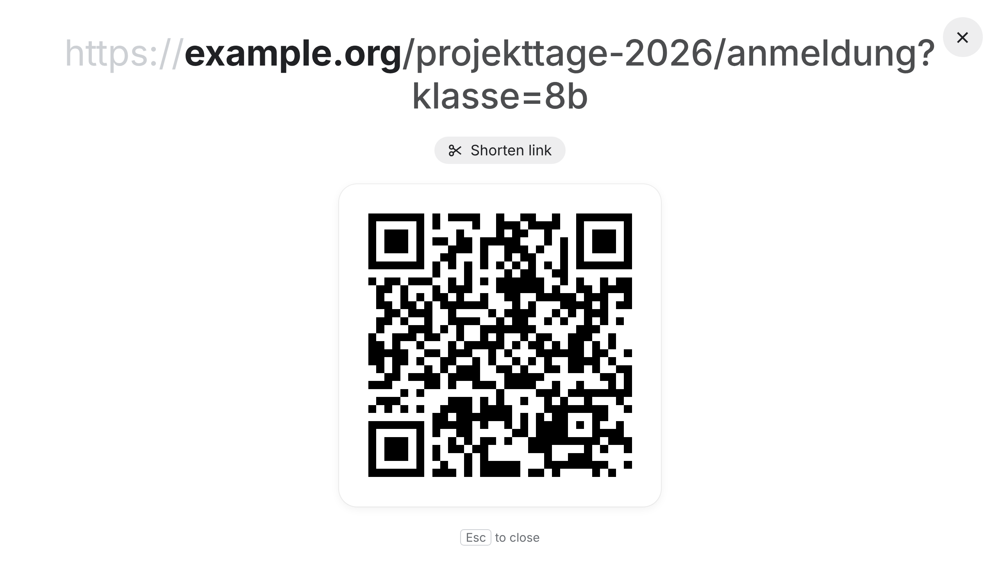

QRbeam
Click the QR icon next to the address bar and the current page becomes one large address and QR code. Made for projectors and classrooms.

utm_source are already gone. “Shorten link” turns the address into an is.gd link when it is too long to type.What it does
One click
Click the icon or press Alt+Shift+Q. Press Esc to go back to the page.
Readable from the back row
The address is large, the https:// stays pale, and the QR code fills the rest of the screen.
Clean links
Removes tracking parameters. Amazon becomes amazon.de/dp/…, YouTube becomes youtu.be/….
Private by default
Nothing leaves your computer unless you press “Shorten link”. Then only that address is sent to is.gd.
Install
- Click Add to Firefox above.
- Firefox asks whether this site may install add-ons. Click Continue to installation, then Add.
- The QR icon appears inside the address bar on every web page.
QRbeam is signed by Mozilla and updates itself. It is not listed on addons.mozilla.org.
- Download the ZIP above and unzip it into a folder you keep, for example
Documents/QRbeam. - Open
chrome://extensions(Edge:edge://extensions, Brave:brave://extensions). - Turn on Developer mode.
- Click Load unpacked and select the folder.
- Click the puzzle icon in the toolbar and pin QRbeam. It now sits right next to the address bar.
Chrome does not update extensions installed this way. To update, unzip the new version into the same folder and click the reload arrow on the extensions page.